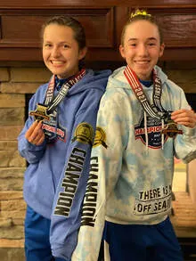

SHORE A.C.'S LESTER WRIGHT JR.
YOUTH CROSS COUNTRY SERIES
SCHEDULE OF EVENTS
Sunday, September 20 at Holmdel Park
Saturday, September 26 at Holmdel Park
Sunday, October 11 at Holmdel Park
Sunday, October 18 at Holmdel Park
Sunday, October 25 at Holmdel Park
Event Locations:
Holmdel Park - 44 Longstreet Road Holmdel, NJ
RACE SCHEDULE
8:00 AM - Bib pick up
9:00 AM - 400M
Grade K & younger (co-ed)
9:05 AM - 800M
Grades 1 & 2 (co-ed)
9:15 AM - 2K
Grades 3 & 4 (co-ed)
9:30 AM - 3K
Grades 5 & 6 (co-ed)
9:45 AM - 4K/5K
Grades 7 & 8 (co-ed)
MEET INFORMATION
Competition is offered at various distances, including 400M, 800M, 2K, 3K and 4K/5K
Top 10 girls and boys of each race get a finish ribbon in weeks 1 to 4
To score as a team, you must have 3 girls and 3 boys
CHAMPIONSHIP MEET
Sunday, October 25, 2026
Holmdel Park
9:00 AM start
AWARDS CEREMONY
Top 20 Individual Boys and Girls per race will receive a medal
Top 3 Individual Boys and Girls per race will receive a trophy
Top Boys and Girls teams per race will receive a trophy
Top Individual Boy and Girl per race for the series receive a trophy
Refreshments and drinks
RACE QUESTIONS
Contact Maurice Bell, Joe Compagni, and Erin O'Neill
SUGGESTED RACES BY AGE/GRADE
400M: ages 6 and under / PreK and Kindergarten
800M: ages 7 - 8 / Grades 1 and 2
2K: ages 9 - 10 / Grades 3 and 4
3K: ages 11 - 12 / Grades 5 and 6
4K: ages 13 - 14 / Grades 7 and 8+
JUNIOR OLYMPICS USATF DOB GUIDANCE
800M: ages 6 and under
2K: ages 7 - 8
3K: ages 9 - 12
4K: ages 13 and 14
5K: ages 15+
REGISTRATION OPTIONS
Register per race - $10
Train and Race the series:
Join the Shore A.C. Gone Running recreational team: 8 Practices, 6 Races and 1 Shore A.C. singlet: $175
Join the Shore A.C. Gone Running recreational team: 16 Practices, 6 Races and 1 Shore A.C. singlet: $255
Join the Shore A.C. Gone Running Junior Olympics team: 24 Practices, 6 Races and 1 Shore A.C. singlet: $355
By choosing this option, you are joining the Shore A.C.'s Gone Running cross country team and the fall Gone Running training program in a location that works best for you. Training locations available in Manalapan, Middletown and Manasquan. This is a great training option for youth runners. By joining the club's Gone Running cross country team you will receive 1 racing singlet, 6 racing opportunities and 1-3 practice(s) per week for 8 weeks. Cross Country races will be directed by Middletown head coaches, Joe Compagni and Erin O'Neill. Each location's head coach will instruct the Gone Running youth program and prep the kids for the race each week. Athletes that sign up for the Junior Olympic team will get to partake in weekly training sessions, Lester Wright Jr. Youth XC series, Junior Olympics training on Saturdays in Manalapan and race in the USATF State Championship in the fall. Read more about Gone Running.


In Memory and Honor of Lester Wright, Jr.
|
 2021 National XC Champions,
Liliah Gordon & Jess Abbott
|